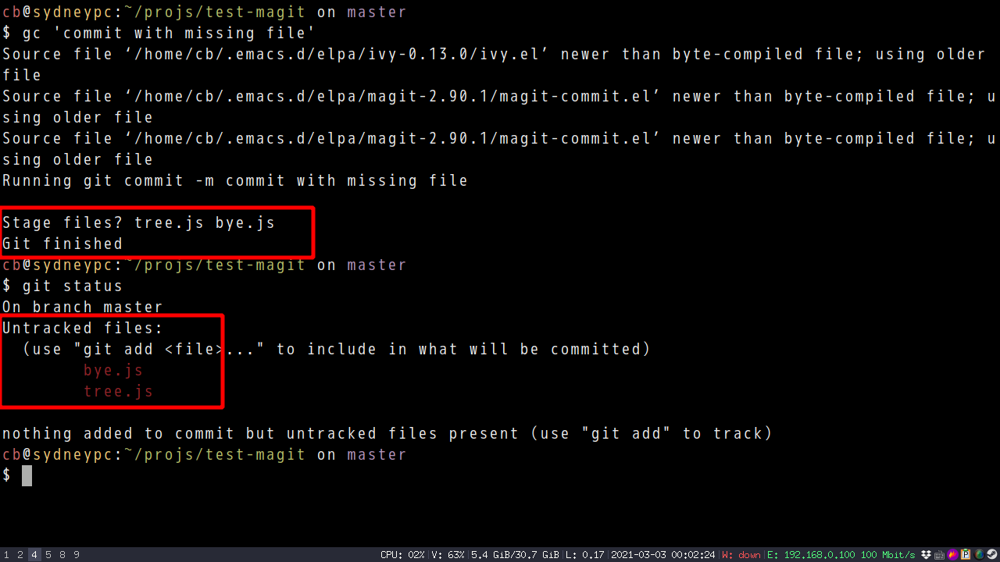

Use Magit to commit efficiently and correctly
I prefer using git cli because it's more light weight.
Here is my bash alias of git commit,
alias gc="git commit -m"
The problem of my "cli-only" workflow is it can't detect my mistakes automatically.
I often forget to add new code file into git. So my final commit might miss files.
Magit UI solution
One solution is to use Magit to commit inside Emacs. After commit, I could double check the files inside the hooks provided by Magit.
My set up in Emacs,
(defun my-lines-from-command-output (command)
"Return lines of COMMAND output."
(let* ((output (string-trim (shell-command-to-string command)))
(cands (nonempty-lines output)))
(delq nil (delete-dups cands))))
(defun my-hint-untracked-files ()
"If untracked files and commited files share same extension, warn users."
(let* ((exts (mapcar 'file-name-extension (my-lines-from-command-output "git diff-tree --no-commit-id --name-only -r HEAD")))
(untracked-files (my-lines-from-command-output "git --no-pager ls-files --others --exclude-standard"))
(lookup-ext (make-hash-table :test #'equal))
rlt)
;; file extensions of files in HEAD commit
(dolist (ext exts)
(puthash ext t lookup-ext))
;; If untracked file has same file extension as committed files
;; maybe they should be staged too?
(dolist (file untracked-files)
(when (gethash (file-name-extension file) lookup-ext)
(push (file-name-nondirectory file) rlt)))
(when rlt
(message "Stage files? %s" (mapconcat 'identity rlt " ")))))
(with-eval-after-load 'magit
(defun my-git-check-status ()
"Check git repo status."
;; use timer here to wait magit cool down
(run-with-idle-timer 1 nil #'my-hint-untracked-files))
(add-hook 'magit-post-commit-hook #'my-git-check-status)
(add-hook 'git-commit-post-finish-hook #'my-git-check-status))
Screenshot of step 1 in Emacs,

Screenshot of step 2 (final step) in Emacs (I was reminded of untracked files "bye.js" and "tree.js" at the bottom of UI),

BTW, my actual code in my .emacs.d is a bit different.
CLI solution but still using Magit
Another solution is still doing the git thing in shell but use the Magit plus Emacs "-batch" option.
Here is my bash setup,
function gc {
# check my emacs.d exist
if [ -f "$HOME/.emacs.d/README.org" ] && [ "$PWD" != "$HOME/.emacs.d" ]; then
# magit hook does not work
emacs -batch -Q -l "$HOME/.emacs.d/init.el" --eval "(magit-commit-create '(\"-m\" \"$@\"))" --eval "(my-hint-untracked-files)"
else
git commit -m "$@"
fi
}
Screenshot in shell, 